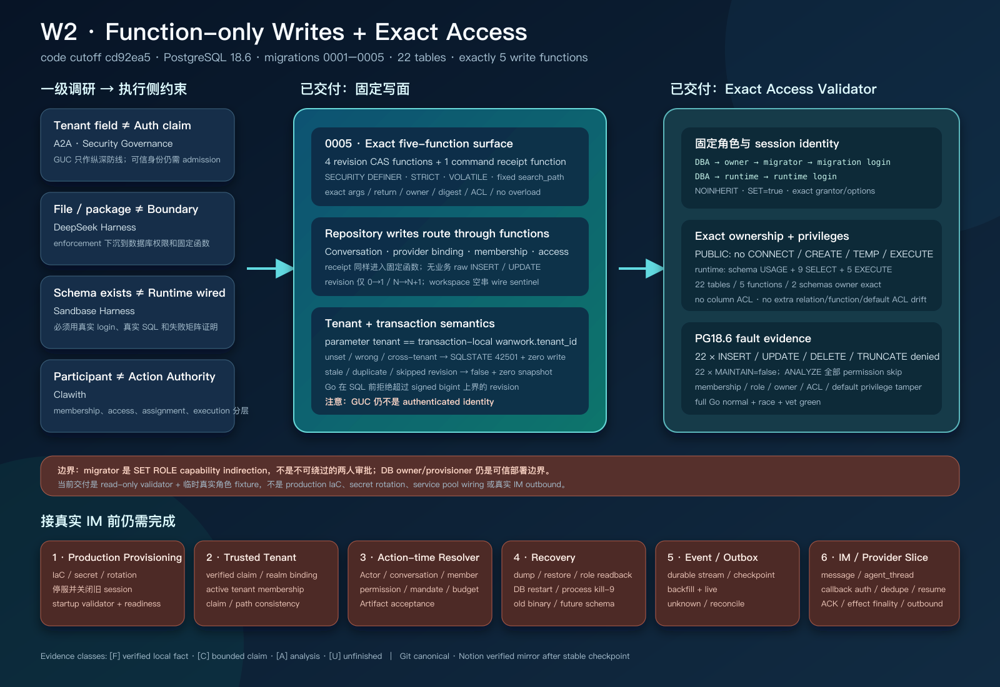

日期：2026-08-28（Asia/Shanghai）
分支：
dev_wanwork_quantum_entanglement（本报告不改变main）代码基线 / HEAD：
cd92ea56493b43889f5165892b40ec36e958d44a本批提交范围：
5fa2456^..cd92ea5（30 个小提交）上一历史检查点：
analysis_report/research/33_postgres_authority_persistence_checkpoint.md（保留原样；本文件是增量检查点，不覆盖 Topic 33）一级研究根：
/Users/lwblx/huapohen/agent/automation/2026/05_08/1/2output与/Users/lwblx/huapohen/agent/automation/2026/05_08/1/2output/more主要代码范围：
apps/im-api/internal/platform/postgres/migrations、apps/im-api/internal/platform/postgres/imstore、apps/im-api/internal/imstore
阶段结构图（一级调研约束、五函数写面、exact access、PostgreSQL 18.6 实证与剩余生产 gate）：

Topic 33 的结论是：PostgreSQL authority persistence substrate
已经存在，但 runtime credential 仍能直接 INSERT/UPDATE
head/snapshot/receipt 表，因此 repository 中的 successor-only
CAS、append-only snapshot 与 tenant check 可以被同一凭据下的任意 SQL
绕过。
本阶段针对这个具体缺口完成了两层收口：
0005_function_only_writes 增加五个固定
SECURITY DEFINER 写函数；conversation、provider
binding、membership、access 与 command receipt repository
已全部改为调用固定函数，而不是发送业务 raw table write；AuthorityAccessManifest 把 database
owner、owner/migrator/runtime group role、显式 migration/runtime
login、membership grantor/options、数据库/schema/table/function/default
privilege 冻结为 exact manifest， 并在 PostgreSQL 18.6
真实登录连接上验证允许面与拒绝面。当前因此可以成立一个更窄、更准确的结论：
对当前五条 ordinary conversation authority 写路径，测试中的 runtime login 必须先显式
SET ROLE runtime，随后只能通过五个登记函数写入；它不能直接修改 22 张 authority 表，也不能获得未登记 的 read、MAINTAIN、DDL、TEMP、owner 或 migrator 能力。函数与角色/ACL 漂移会被 exact comparator 拒绝。
这个结论仍然不是“生产 IM 已完成”，也不是“完整多租户授权已完成”。角色创建、database ownership 转交、 login/password/secret rotation、startup/readiness validator、旧 session cutover 目前只有代码合同和测试 fixture， 没有 production IaC 与生产组合。trusted tenant、action-time resolver、durable event/outbox、恢复演练和 IM outbound 仍未交付。
全文使用四类标记，避免把研究判断、代码存在和真实运行混成同一件事：
| 标记 | 含义 | 本报告的使用边界 |
|---|---|---|
[F] |
可复核事实 | 固定源码、git 提交、PostgreSQL catalog 查询或本次实际测试结果。 |
[C] |
有条件结论 | 只有在当前数据库、当前登记对象、列出的连接角色与测试前提下成立。 |
[A] |
分析判断 | 从一级调研和当前实现推导出的设计判断，不冒充已交付能力。 |
[U] |
未知 / 未验证 | 生产拓扑、故障、恢复或 provider 行为尚无足够证据。 |
| 标记 | 结论 |
|---|---|
[F] |
catalog 已激活 0005_function_only_writes；migration
总数从 4 增至 5。 |
[F] |
五个函数的名字、参数名/顺序、identity
signature、返回类型、owner、安全属性、search_path、definition
digest、ACL 与 overload 数量都被 exact manifest 校验。 |
[F] |
四个 revision 函数只接受 create 0→1 或 update
N→N+1；duplicate/stale/skipped 返回
false，不追加 snapshot。 |
[F] |
未设置 tenant GUC、GUC 与函数 tenant 参数冲突时，固定 SQLSTATE
42501，且目标 aggregate 零写入。 |
[F] |
repository 已不再直接发出业务 INSERT/UPDATE；receipt
也通过固定函数写入。 |
[F] |
exact access manifest 覆盖显式登录角色、role attributes/settings、membership grantor/options、database/schema/relation/column/function/default ACL。 |
[F] |
PostgreSQL 18.6 normal/race 下，migration 与 imstore 两个包本次独立复跑均通过。 |
[C] |
runtime function-only write 保证只覆盖五个登记函数和当前 22 张
wanwork_im 表；不自动覆盖未来对象、外部数据库、provider
或未登记写路径。 |
[A] |
这一层是生产 credential containment 的必要底座，但不是 authenticated tenant admission 或 action-time business authorization。 |
AuthorityAccessManifest 已接入服务
startup/readiness；当前 production composition 中没有调用它；agent_thread、message/reaction/read
state、Task、Attempt、Artifact、Acceptance 已持久化；migrator 角色说成不可绕过的“双人审批”。它是
capability indirection；列出的 migration login 在固定 membership
图中可以沿 migrator → owner 显式
SET ROLE。本阶段继续把用户指定的两层目录并列视为一级研究输入。根目录保存调研组合，more
保存各项目和专题的
冻结研究报告；本报告不把二次摘要替代为新的“事实来源”。采用的链路是：
一级报告中的 [F]/[C]/[A]/[U]
→ 产品/安全不变量
→ PostgreSQL function 与 ACL enforcement point
→ 真实 login/role/SQL 负测
→ 只在证据覆盖范围内下结论以下路径均相对于
/Users/lwblx/huapohen/agent/automation/2026/05_08/1/2output/more。
| 一级证据 | 原始证据边界 | 对本阶段的硬约束 | 当前落实 | 没有被错误升格的部分 |
|---|---|---|---|---|
protocol-a2a/research_report.md:425-457,480-500 |
[F]/[A] A2A 的 tenant path/参数不等于 authenticated
caller authorization；tenant IDOR、duplicate execution、stream gap 需要
object authorization、idempotency/outbox/replay。 |
函数 tenant 参数必须与 transaction-local context 精确一致，冲突 fail closed；测试必须包含 cross-tenant negative case。 | 五函数显式 tenant equality check；unset/wrong/cross-tenant 均以
42501 拒绝。 |
GUC 没有被称为 token claim；outbox/replay 仍列为未交付。 |
tech-agent-security-governance/research_report.md:145-170,315-329,460-486 |
[A] long-lived credential、secret in
context、overgrant、cross-tenant state
是核心风险；permission/tenant/role negative cases 应进入 release
gate。 |
同一 runtime credential 不应拥有 raw table mutation；验证必须在资源侧而非依赖模型、UI 或 Go package 私有性。 | runtime 只获固定 function EXECUTE、九张表
SELECT；全部 22 张表 raw mutation 与 MAINTAIN
被拒绝。 |
当前没有 secret broker、短 lease、KMS 或 production rotation，不能用 ACL 代替这些能力。 |
同上 :595-627 |
[A] Agent 只提交 canonical intent，trusted
gateway/executor 获取窄
credential；资源侧应只信受控入口，避免绕过直连。 |
将 database function 作为独立 execution-side PEP；登录身份与有效 group role 分离。 | runtime login 必须显式
SET ROLE runtime；写资源只信五个函数。 |
函数入口只约束 DB mutation，不等于完整 Action Gateway、mandate、approval 或 outbound executor。 |
deepseek-harness/research_report.md:255-312,543-591,823-842 |
[F]/[A] durable/live 状态必须分域；恢复依赖 durable
event spine、checkpoint 与重放；enforcement 应在真实执行边界。 |
不把 process memory、UI 或 receipt 冒充 durable event system；数据库层应留下可复核 enforcement。 | function-only write 与 transaction receipt 被收窄；PG catalog/test 可独立复核。 | event stream/global order/outbox/checkpoint/backfill+live/crash recovery 仍未实现。 |
deepseek-harness/research_report.md:433-447,809-837 |
[F]/[A] 文件权限、同 UID 或 package boundary
不是强安全边界；side effect 需要执行侧 capability、receipt 与
reconcile。 |
不以 repository 私有函数作为安全证明；必须使 raw SQL 在数据库权限层失败。 | 使用真实 runtime role 对 raw mutation、DDL、TEMP、owner/migrator escalation 做 SQLSTATE 负测。 | 未验证 provider side effect、ACK 丢失和生产 reconcile。 |
sandbase-harness/research_report.md:485-489,551-569 |
[F]/[A] schema/配置“存在”不证明 runtime
wiring；权限合同必须在真实执行路径被实际使用。 |
不仅创建函数，还必须把 repositories 改为调用函数，并由 runtime login 完成 round trip。 | conversation/binding/membership/access/receipt repositories 全部切换；runtime-login imstore integration 通过。 | access validator 仍未接 production startup，因此只能称库和测试已完成。 |
clawith/research_report.md:198-226,403-419,543-575 |
[F]/[A] Participant、global identity、tenant
membership、workspace/group membership、acting principal、assignment 与
execution binding 应分层。 |
数据库角色不应被升格为业务 Participant authority；access projection 与 capability/credential/action gate 分离。 | 本批只收窄 ordinary conversation persistence 写入口。 | trusted acting principal、Agent installation/mandate/budget/action-time recheck 未实现。 |
clawith/research_report.md:599-611 |
[F]/[A]/[U] 渠道枚举或 adapter 文件数量不证明
webhook、成员映射、顺序、幂等 ACK 和 outbound 成熟；outbound 应保存
provider receipt 与 unknown/reconcile。 |
provider binding 只能被视为平台映射；不得宣称真实 IM 已发送。 | 仍保持“默认不发送”；没有触达任何外部 IM。 | inbound signature、outbound dispatch、provider message ID、unknown/reconcile 均未交付。 |
_portfolio/master_research_report.md:220-226,640-679 |
[A]
群聊不自动产生可靠协作；Task、Artifact、Acceptance、Evidence、Recovery
是独立权威对象。 |
不把 conversation row、access row 或 receipt 冒充 Task 完成和业务验收。 | 本阶段只做 authority persistence write containment。 | Task/Attempt/Artifact/Acceptance/Recovery 仍保留在后续计划。 |
SECURITY DEFINER”等同于函数天然安全；其
body digest、owner、security mode、
language、volatility、strictness、parallel、leakproof、search path、ACL
和 overload 都被逐项比较；MAINTAIN、TEMP、PUBLIC CONNECT 和 membership
grantor/options 都进入负测；from: 5fa24563ba237e2deafdb4da1e31bf5a4645490b
to: cd92ea56493b43889f5165892b40ec36e958d44a
rev: 5fa2456^..cd92ea5
count: 30 commits
diff: 22 files, +3159 / -288主要新增/修改：
migrations/sql/0005_function_only_writes.up.sql /
.down.sql；migrations/function_postconditions.go 及
unit/integration tests；migrations/access_manifest.go 及 unit/integration
tests；migrations/sql_policy.go、catalog/postcondition/runner
integration；imstore/repositories.go、uow.go 与
normal/race PostgreSQL integration；docs/wanwork_im/W2_POSTGRES_FUNCTION_WRITE_PLAN.md。| # | 提交 | 作用 | 阶段边界 |
|---|---|---|---|
| 1 | 5fa2456 |
仅为 migration version 5 冻结 function DDL policy | 没有向未来 migration 泛化 function DDL。 |
| 2 | 0c21cc8 |
冻结五函数签名、workspace 空串 sentinel、PostgreSQL bigint 上界 | 先冻结 wire contract，尚未写 schema。 |
| 3 | a3ebc3f |
增加 exact function manifest comparator | comparator 先行。 |
| 4 | 6f9a233 |
暂存 0005 up/down SQL |
尚未激活 catalog。 |
| 5 | 89153d9 |
激活 0005，接 definition digest/postcondition 与 PG18
集成 |
五函数成为 migration catalog 一部分。 |
| 6 | af7e1e4 |
repository 入口拒绝超过 PostgreSQL bigint 的
revision |
避免把编码失败误报为 store outage。 |
| 7 | 452cf30 |
conversation revision 改走固定函数 | 移除该 aggregate 的 raw write。 |
| 8 | 0c25e65 |
provider conversation binding 改走固定函数 | 同上。 |
| 9 | 831e491 |
conversation membership 改走固定函数 | 同上。 |
| 10 | 557cda3 |
conversation access 改走固定函数 | 同上。 |
| 11 | 47c743b |
command receipt 改走固定函数 | receipt 不再 raw insert。 |
| 12 | 22cb361 |
runtime 撤销 raw authority write，并增加 mutation/DDL 负测 | 初始 runtime containment。 |
| 13 | 2ef2551 |
允许安全 function grant 后重复 Apply 继续通过 |
历史 postcondition 与安全 ACL 共存。 |
| 14 | 3fcc7ba |
runtime SELECT 缩到真实使用的九张表 |
不授予全部 authority read。 |
| 15 | d911c51 |
引入 exact authority access manifest | role/object/ACL comparator 主体。 |
| 16 | 5bf39f8 |
raw write 矩阵扩到全部 22 张 authority 表 | 防止只测 repository 当前九表。 |
| 17 | acdd908 |
拒绝 scoped role/database settings | 阻止 role config 偷渡 search path 等设置。 |
| 18 | 0230437 |
冻结 wanwork_meta relation inventory |
metadata schema 不能静默加 relation。 |
| 19 | 949c3c9 |
拒绝 metadata schema routines | wanwork_meta 不允许旁路函数。 |
| 20 | 68989b8 |
exact 比较 owner 的 function default ACL | 未来函数默认不向 PUBLIC 开放。 |
| 21 | f21a8c7 |
注入 object ACL drift | 验证额外/缺失 grant fail closed。 |
| 22 | 9d745a7 |
注入 role attribute 与 database drift | 验证 LOGIN/INHERIT/settings/PUBLIC/TEMP 等漂移。 |
| 23 | 4f9d1a1 |
拒绝相同 membership 的重复 grantor row | 不因 group/去重漏掉不同授权者。 |
| 24 | 5f9c962 |
通过真实 migration login 验证 access | 不再只用 admin session 假装 deploy identity。 |
| 25 | bceb8bc |
validator 绑定列出的 migration session_user |
unlisted admin 即使 SET ROLE owner 也失败。 |
| 26 | f553f10 |
增加 unlisted migration session 负测 | 固定 validator 入口身份。 |
| 27 | c623aea |
通过真实 runtime login 执行 store | 验证 login→SET ROLE runtime→repository。 |
| 28 | b10e7c7 |
每张表拒绝 runtime MAINTAIN / ANALYZE |
吸收 PostgreSQL 18 新 privilege 面。 |
| 29 | 83d38d8 |
证明 migration login 的允许/拒绝边界 | 只可走指定 SET ROLE 路径。 |
| 30 | cd92ea5 |
out-of-band writer 测试显式绑定 runtime role | 幂等冲突/锁路径不再借 owner 权限通过。 |
0005_function_only_writes 精确合同runtime login（LOGIN, NOINHERIT）
→ SET ROLE runtime
→ Serializable tenant Unit of Work
→ SET LOCAL wanwork.tenant_id
→ typed repository
→ SELECT wanwork_im.write_*($1, ...)
→ SECURITY DEFINER function
→ tenant 参数 == transaction-local GUC
→ successor-only head CAS + append snapshot / insert receipt
→ outer transaction commit / rollback这里的 SECURITY DEFINER 只用于把有限函数调用转换为 owner
执行的固定 SQL。runtime 不获得 underlying table
write。函数没有动态表名、动态 EXECUTE、JSON patch 或“通用
SQL”入口。
| 函数 | exact 参数名与顺序 | 返回 | 当前用途 |
|---|---|---|---|
write_conversation_revision |
p_tenant_id text, p_conversation_id text, p_expected_revision bigint, p_next_revision bigint, p_workspace_id text, p_conversation_type text, p_status text |
boolean |
ordinary direct/group conversation head + snapshot。 |
write_provider_conversation_binding_revision |
p_tenant_id text, p_provider text, p_realm_id text, p_provider_conversation_id text, p_expected_revision bigint, p_next_revision bigint, p_conversation_id text, p_status text |
boolean |
provider conversation mapping head + snapshot。 |
write_conversation_membership_revision |
p_tenant_id text, p_conversation_id text, p_actor_id text, p_expected_revision bigint, p_next_revision bigint, p_role text, p_status text |
boolean |
conversation membership head + snapshot。 |
write_conversation_access_revision |
p_tenant_id text, p_conversation_id text, p_actor_id text, p_expected_revision bigint, p_next_revision bigint, p_can_read boolean, p_can_send_message boolean, p_can_manage_members boolean, p_can_manage_conversation boolean, p_can_invoke_agent boolean, p_can_publish_artifact_reference boolean |
boolean |
六项 immutable access projection head + snapshot。 |
write_tenant_command_receipt |
p_tenant_id text, p_command_kind text, p_idempotency_key text, p_request_sha256 text, p_result_sha256 text |
timestamptz |
插入 transaction-local command receipt 并返回
committed_at。 |
四个 revision 函数共同冻结：
expected_revision=0 且
next_revision=1；expected_revision>=1 且
next_revision=expected_revision+1；false；false 时不产生 snapshot；repository 映射为稳定的
revision conflict；current_setting('wanwork.tenant_id', true) 必须与
p_tenant_id 精确相同；缺失或不同均抛 SQLSTATE
42501；uint64 在发 SQL 前限制为 PostgreSQL signed
bigint 上界 9223372036854775807；NULLIF(p_workspace_id, '') 恢复 SQL
NULL；其他参数不共享这个 sentinel。receipt 函数没有 revision CAS。它执行受约束的单行 insert；既有 Unit of Work 仍负责 transaction advisory lock、request/result digest、existing receipt read、exact replay 和 unknown commit 后的新连接回读。函数本身不保存 response body、provider receipt 或 event position。
每个登记函数必须同时满足：
| 维度 | exact 要求 | 防止的漂移 |
|---|---|---|
| name/signature | exact 名字、参数名/顺序、identity arguments、返回类型 | 错参、隐式 cast、额外 overload。 |
| owner | owner 必须等于当前 migration owner；access manifest 再精确绑定命名 owner role | 函数被转给错误角色。 |
| language/kind | plpgsql、普通 function kind f |
procedure/language 换壳。 |
| execution | SECURITY DEFINER |
漂移为 invoker 导致权限/语义变化。 |
| behavior flags | VOLATILE、STRICT、PARALLEL UNSAFE、LEAKPROOF=false |
planner/NULL/并行/泄漏语义变化。 |
| path | function-local search_path=pg_catalog；业务对象 fully
qualified |
hostile ambient schema shadowing。 |
| body | domain-separated SHA-256 definition digest exact | 安全属性不变但函数逻辑被修改。 |
| ACL | owner 自身 exact execute；PUBLIC 无 execute；仅安全 non-login group 可获非 grantable execute | PUBLIC、login 直授或危险 role 进入。 |
| inventory | wanwork_im 中只允许五个 exact function identity |
旁路函数与同名 overload。 |
definition digest 保护的是 catalog 中的函数定义，不保护业务行、event payload、provider response 或备份内容。 它也不是代码签名或供应链 provenance。
function DDL 不是被全局开放。5fa2456 只给 catalog 中
version 5 的固定 SQL policy 开口；future migration 不会自动继承
CREATE FUNCTION 能力。0005 的 embedded SQL
仍受 checksum、version/name、lexer policy、 exact postcondition
与累计历史 postcondition 共同约束。
该 token-aware policy 仍不是用于执行任意不可信 SQL 的 parser/sandbox。安全结论依赖 migration source review、 embedded checksum 与 exact postcondition 的组合，不能把 allowlist 单独宣传成通用 SQL firewall。
| Repository path | 旧路径 | 当前路径 | 返回语义 |
|---|---|---|---|
| Conversation CAS | raw head insert/update + snapshot insert | write_conversation_revision |
true 成功；false revision conflict。 |
| Provider binding CAS | raw head/snapshot write | write_provider_conversation_binding_revision |
同上。 |
| Membership CAS | raw head/snapshot write | write_conversation_membership_revision |
同上。 |
| Access CAS | raw head/snapshot write | write_conversation_access_revision |
同上。 |
| Command receipt | raw receipt insert | write_tenant_command_receipt |
返回 non-zero committed_at。 |
代码搜索与本批 diff 表明 repositories.go 的这些业务
mutation 已被函数 SELECT 替代。integration 又通过 真实
runtime login/pool 执行 round trip，因此不是“只创建 SQL 函数、应用仍走旧
SQL”。
五个函数没有覆盖 roots 与 identity authority（如 tenant/workspace、human principal、Actor、tenant membership、provider Actor binding）。runtime 对这些表同样无 raw mutation，因此当前服务不能把它们当作已完成的 production write API。后续若需要写入，应为具体 use case 新增窄函数/command，不应恢复表级通用写权限。
本批收窄的是数据库写 capability，没有把 Unit of Work 扩张为外部 provider transaction coordinator。
AuthorityAccessManifest 包含：
DatabaseOwnerRole
OwnerRole
MigratorRole
RuntimeRole
MigrationLoginRoles[]
RuntimeLoginRoles[]role name 只接受 canonical lowercase
[a-z][a-z0-9_]{0,62}，所有 core/login
名必须全局互异，migration 与 runtime login 列表均不能为空。
ValidateAuthorityAccess 是
read-only、repeatable-read、fail-closed
comparator，不会自动修复角色、owner 或
grant。调用连接还必须同时满足：
session_user ∈ manifest.MigrationLoginRoles
current_user = manifest.OwnerRole因此：
SET ROLE owner，validator 也拒绝；SET ROLE owner，validator
也拒绝；DefaultAuthorityAccessManifest 只提供 core role
默认名；由于环境 login 列表必须显式填写，默认值本身不能直接 通过
validation。这是刻意的 fail closed，不是开箱即用的生产配置。
external database owner / provisioner
├─ GRANT owner TO migrator WITH ADMIN false, INHERIT false, SET true
├─ GRANT migrator TO migration_login WITH ADMIN false, INHERIT false, SET true
└─ GRANT runtime TO runtime_login WITH ADMIN false, INHERIT false, SET true
migration_login → SET ROLE owner（沿显式 membership 路径）→ Apply + Validate
runtime_login → SET ROLE runtime → service UoW所有上述 membership row 的 grantor 必须精确等于
DatabaseOwnerRole。comparator 按
granted/member/grantor 比较，并逐项要求
admin=false、inherit=false、set=true；不同
grantor 创建的 “同一 granted/member”重复 row 也会被识别为 drift。
migrator 的作用是 capability indirection 和 login
集合管理。它没有构成两人审批，也没有让 migration login 无法到达
owner；真正的双人/审批控制需要外部 deploy workflow、短期凭据、审计和
separation-of-duties，当前未实现。
对 owner/migrator/runtime 三个 group role 与所有列出的环境 login，manifest 要求：
| 属性 | group role | environment login |
|---|---|---|
LOGIN |
false | true |
INHERIT |
false | false |
SUPERUSER |
false | false |
CREATEROLE |
false | false |
CREATEDB |
false | false |
REPLICATION |
false | false |
BYPASSRLS |
false | false |
| connection limit | -1 |
-1 |
VALID UNTIL |
unset | unset |
role-level rolconfig |
absent | absent |
| database-scoped role settings | absent | absent |
这里不对 external database owner/provisioner 的 cluster-level attributes 下同样结论；它是 manifest 外部的 bootstrap authority，但其 database ownership 与 grantor 身份会被比较。生产环境如何保护该高权主体属于 IaC/DBA 交接边界。
DatabaseOwnerRole；CONNECT、CREATE、TEMPORARY；CREATE；CONNECT；CONNECT，所有 manifest
roles 均无 database TEMPORARY；撤销 PUBLIC CONNECT 只影响新连接许可，不会断开已经存在的 session。真实 cutover 必须停服务、确认/终止旧 session、完成 ownership/grant、再以新 login 启动；本批测试没有把这一点冒充已交付的 production runbook。
| 对象域 | exact owner/inventory | non-owner privilege |
|---|---|---|
wanwork_meta schema |
owner role；exact 一张 schema_migrations table；无
routine |
无 runtime USAGE/表 privilege。 |
wanwork_im schema |
owner role；exact 22 张 ordinary table；无额外 table/view/materialized view/sequence/foreign table/partitioned table | runtime 仅 USAGE。 |
wanwork_im tables |
22 张均由 owner role 拥有 | runtime 只对九张表有 SELECT；其余无 non-owner table
ACL。 |
| columns | owner 之外不得存在 column ACL | direct UPDATE(column) 等 grant 会 drift。 |
access manifest 的 relation inventory 不把 index relkind 纳入自己的 exact list；index/constraint/RLS 的形状仍由 各 migration postcondition 检查。不能把 relation comparator 夸大为“整个 PostgreSQL catalog 的通用 schema digest”。
runtime exact read 九表：
conversation_access_heads
conversation_access_snapshots
conversation_heads
conversation_membership_heads
conversation_membership_snapshots
conversation_snapshots
provider_conversation_binding_heads
provider_conversation_binding_snapshots
tenant_command_receiptsruntime 不读取 identity/root
表并不证明对应业务不需要它们，而是说明当前 repository
的真实读面只到这九张表。 未来增加 read use case 时必须显式更新
manifest、测试和审计，而不是用
GRANT SELECT ON ALL TABLES。
wanwork_im routine inventory
精确等于五个登记函数；EXECUTE；EXECUTE；wanwork_meta 不得存在 routine；关键 provisioning 语义是：
ALTER DEFAULT PRIVILEGES FOR ROLE <owner>
REVOKE EXECUTE ON FUNCTIONS FROM PUBLIC;这里是 owner 的全局 function default privilege（catalog 中
defaclnamespace=0），不能用只写
IN SCHEMA wanwork_im 的版本代替。
runtime login 连接时
session_user=current_user=runtime_login，且由于
NOINHERIT 不自动获得 schema USAGE。成功
SET ROLE runtime 后：
允许：
wanwork_im schema；SELECT；EXECUTE；拒绝：
INSERT/UPDATE/DELETE/TRUNCATE；MAINTAIN，以及
ANALYZE（权限错误或 PostgreSQL skip warning
均不能实际维护表）；CREATE SCHEMA、schema 中
CREATE TABLE/FUNCTION、CREATE TEMPORARY TABLE；ALTER POLICY；SET ROLE owner、SET ROLE migrator；SELECT；server_version: 18.6 (Homebrew)
server_version_num: 180006
endpoint: disposable localhost PostgreSQL test instance
code HEAD: cd92ea56493b43889f5165892b40ec36e958d44a
date: 2026-08-28 Asia/Shanghai报告不记录任何 API key、数据库密码或外部 signed URL。本机测试 URL 只连接无凭据的 disposable local PostgreSQL admin database；integration tests 为每个场景创建唯一临时 database/role，并在 cleanup 中显式回收。
在 apps/im-api 下，以
WANWORK_TEST_POSTGRES_ADMIN_URL 指向上述本地 PG18
实例执行：
go test ./internal/platform/postgres/migrations -count=1
ok .../postgres/migrations 5.050s
go test -race ./internal/platform/postgres/migrations -count=1
ok .../postgres/migrations 7.172s
go test ./internal/platform/postgres/imstore -count=1
ok .../postgres/imstore 1.443s
go test -race ./internal/platform/postgres/imstore -count=1
ok .../postgres/imstore 2.274s以上四条是本报告生成过程中的实际复跑，不是从旧报告复制的结果。它们证明当前两个包在该机器、该 PG18.6 实例和该代码 HEAD 下通过；不证明生产网络、RDS、连接代理、备份恢复或多地域行为。
TestFunctionOnlyWritesAgainstPostgres 覆盖：
ten_alpha、参数=ten_beta 的
cross-tenant 调用拒绝且零行；SECURITY INVOKER、错误 volatility、危险
search path、PUBLIC execute、额外 overload；Apply 返回
ErrMigrationSchema，确定性 drift 不把连接误隔离为 unknown
outcome。exact function comparator 的 unit tests 还覆盖参数/owner/language/kind/strict/security/parallel/leakproof/config/ safe ACL/body digest 的偏差。
TestAuthorityAccessManifestAgainstPostgres 使用真实
provisioner、migration login、runtime login 与 SET ROLE
链，而不是只比较内存
fixture。它逐个注入、确认拒绝、修复后再确认通过：
MAINTAIN grant；wanwork_im 额外 table/function；wanwork_meta 额外 table/function；ADMIN / INHERIT /
SET option 漂移；imstore integration 构造 93 个拒绝 fixture：
22 authority tables × 4 operations
= INSERT + UPDATE + DELETE + TRUNCATE
= 88
+ CREATE SCHEMA
+ CREATE TABLE
+ CREATE FUNCTION
+ ALTER POLICY
+ CREATE TEMPORARY TABLE
= 5
total = 93每个 statement 都在绑定 tenant 的 transaction 中通过真实 runtime role
执行，并要求 SQLSTATE 42501。 这避免只验证 conversation
repository 当前涉及的九张表，却把其他 13 张 root/identity 表留作
credential 旁路。
另一个 access integration 逐张检查 22 表的 SELECT
exactness、MAINTAIN=false，并尝试 ANALYZE；
migration login integration 同时确认它不能
SET ROLE runtime、不能在未切 owner 时继承业务 schema
privilege， 只能沿登记路径显式选择 owner。
| Topic 33 缺口 | Topic 34 状态 | 证据 |
|---|---|---|
| runtime 可 raw write head/snapshot/receipt | 已在当前登记表面关闭 | 五函数、repository wiring、22 表 × 4 mutation 负测。 |
| 受控数据库写函数未完成 | 已完成五个 exact 函数 | 0005 SQL、manifest、digest、tamper tests。 |
| 角色/ACL 只有宽泛 runtime fixture | exact access validator 与真实 login fixture 已完成 | role/database/schema/relation/function/default ACL drift matrix。 |
| runtime read 过宽 | 缩到九张真实 read 表 | exact table ACL comparator 与 runtime login test。 |
PostgreSQL 18 MAINTAIN 未显式建模 |
已纳入 exact privilege 和负测 | 22 表 privilege/ANALYZE 检查。 |
| function 安全 grant 后旧 migration 可能无法复验 | 已允许安全 non-login runtime grant，重复 Apply
通过 |
2ef2551 与 migration tests。 |
| production IaC/startup/trusted tenant/resolver/event/IM adapter | 仍未完成 | 本报告第 9 节。 |
因此 Topic 33 不应删除或改写：它记录了进入 0005 之前的
authority persistence 边界；Topic 34 只记录 function-only write + exact
access 收口后的新基线。
以下不是“锦上添花”，而是把当前数据库 substrate 变成可安全接入原生 IM 的独立交付项。
当前 provisionAuthorityAccess 是 test
helper，不是部署代码。生产必须提供：
在这项完成前，不能把测试 fixture 的 exact ACL 称为生产已经启用。
函数只比较 tenant_id 参数与 GUC，UoW 负责设置
GUC；二者可能来自同一个不可信输入，因此不能互相证明
真实性。必须把以下输入收敛为 server-owned context：
verified issuer/JWKS claim
+ human/service/Agent identity binding
+ HTTP/path tenant
+ active tenant membership
+ session/workload identity
→ TrustedTenantContext（调用方不能任意覆盖）claim/path mismatch、inactive membership、cross-tenant object ID、worker 无 tenant context 都必须 fail closed。
六个 access boolean 是持久化 projection，不是最终 permit。发送消息、invoke Agent、publish Artifact ref 时至少要 组合：
resolver 必须在 dispatch 前重验，不能只在 UI 隐藏按钮，也不能因为数据库 role 允许执行写函数就批准业务动作。
当前 cmd/im-api/main.go
尚未把以下对象组成完整启动闭环：
production config
→ migration login connect
→ SET ROLE owner
→ Apply migrations
→ ValidateAuthorityAccess
→ runtime login pool
→ AfterConnect SET ROLE runtime
→ UoW/repositories/use cases/routes
→ readiness only after all checks
→ bounded shutdown / connection drain特别是 ValidateAuthorityAccess 当前只被测试调用。未接
startup 前，生产 drift 不会自动挡住 readiness。
需要形成可重复证据：
单元测试和本地 integration 不能替代 production recovery drill。
command receipt 只证明一个 digest-based command transaction，不提供协作产品需要的 durable event spine。仍需：
不能采用“DB commit 后再 append memory event”的伪双写；那会留下 crash gap。
当前 provider conversation binding 只是一条平台映射。提前接原生 IM 前仍需最小闭环：
本阶段没有向任何 IM 发消息，也没有验证融云 sandbox/production。
agent_thread、message/reaction/read
state、Task/Attempt/Action、Artifact/Acceptance、attention routing 与
human-in-the-loop 仍是独立业务域。一级调研明确说明群聊只是协作
surface，不能反向充当所有权威状态。
| 层 | 当前状态 | 能否作为 IM 依赖 |
|---|---|---|
| PostgreSQL 18 migration + 22 authority tables | 已有真实 normal/race 证据 | 可作为底座。 |
| 五个 function-only writes | 当前登记路径已完成 | 可作为 conversation authority 写底座。 |
| exact access manifest library/test | comparator 与 fixture 完成 | 只有 production IaC/startup 接入后才能作为生产 gate。 |
| trusted tenant admission | 未完成 | 不可由 IM 输入直接替代。 |
| action-time resolver | 未完成 | 不可发送前省略。 |
| durable event/outbox | 未完成 | outbound 前至少需要最小 transactional outbox。 |
| provider inbound/outbound adapter | 未完成 | 不能宣称已接 IM。 |
| recovery/runbook | 未完成 | 不能宣称生产可运营。 |
阶段结论：
[A] 可以并行开始定义原生 IM adapter 的纯合同、canonical
event、provider receipt 与 sandbox fixture；[A] 不应让真实 inbound 请求在没有 trusted tenant
admission 时直接选择 tenant；[A] 不应让真实 outbound 在没有 action-time resolver 和
transactional outbox 时发送；[A] production access cutover/startup gate
应先于真实流量，而不是在事故后补做。Apply → ValidateAuthorityAccess → runtime pool；验收：未列 login、任一 owner/grant/default ACL/role setting drift 都阻止 readiness；runtime credential 无法 raw write；部署可回滚且旧 session 不存留。
验收：客户端 tenant 字段不能覆盖 verified context；权限在 dispatch 时重新验证；撤权立即影响新 action。
验收：DB authority mutation 与待发送事件原子提交；ACK 丢失不会被误报失败或盲目重复发送；可从 durable position 重建 projection。
在前三个 gate 形成可信底座后，再把
agent_thread、message、Task、Artifact、Acceptance 与 Agent
runtime 接入，避免用聊天记录和 provider 状态替代平台权威对象。
| 主题 | 文件 |
|---|---|
| migration catalog / policy | apps/im-api/internal/platform/postgres/migrations/catalog.go、sql_policy.go |
0005 DDL |
apps/im-api/internal/platform/postgres/migrations/sql/0005_function_only_writes.up.sql、.down.sql |
| exact function manifest | apps/im-api/internal/platform/postgres/migrations/function_postconditions.go |
| function PG integration | apps/im-api/internal/platform/postgres/migrations/function_only_writes_integration_test.go |
| exact access manifest | apps/im-api/internal/platform/postgres/migrations/access_manifest.go |
| access PG integration | apps/im-api/internal/platform/postgres/migrations/access_manifest_integration_test.go |
| repository function calls | apps/im-api/internal/platform/postgres/imstore/repositories.go |
| runtime/login/UoW matrix | apps/im-api/internal/platform/postgres/imstore/uow_integration_test.go |
| 冻结计划 | docs/wanwork_im/W2_POSTGRES_FUNCTION_WRITE_PLAN.md |
| 主题 | 报告 |
|---|---|
| Agent loop / durable event spine / recovery | more/deepseek-harness/research_report.md |
| tenant / identity / action-time / channel adapter | more/clawith/research_report.md |
| A2A auth / tenant / duplicate / outbox | more/protocol-a2a/research_report.md |
| credential / PEP / negative release gate | more/tech-agent-security-governance/research_report.md |
| runtime wiring 不得只看 schema | more/sandbase-harness/research_report.md |
| 群聊、Task、Artifact、Acceptance、Recovery 分层 | more/_portfolio/master_research_report.md |
5fa2456^..cd92ea5 把 Topic 33
最明确的数据库权限缺口真正关闭了一段：五条 ordinary conversation
authority mutation 已经从“repository 约定的 raw
SQL”变成“数据库只授予固定函数的窄 capability”；函数本身和
database/schema/table/function/role/default ACL 又由 exact manifest 与
PostgreSQL 18.6 真实负测约束。
这是一项实质性的阶段交付，但证据边界必须保持克制：当前完成的是 function-only write substrate 与 exact access validator/test，不是 production IaC，不是 trusted tenant，不是 action-time resolver，不是 durable event/outbox，不是恢复体系，也不是 IM outbound。下一阶段应先把 exact access 接入 production-like startup， 再完成 trusted tenant + resolver + transactional outbox，之后真实 IM 流量接入才会“舒服”，而不是靠宽凭据和 聊天状态把基础债务带入生产。